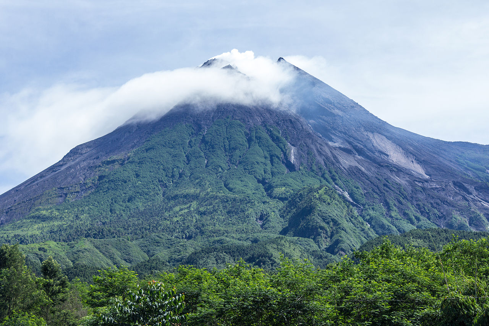
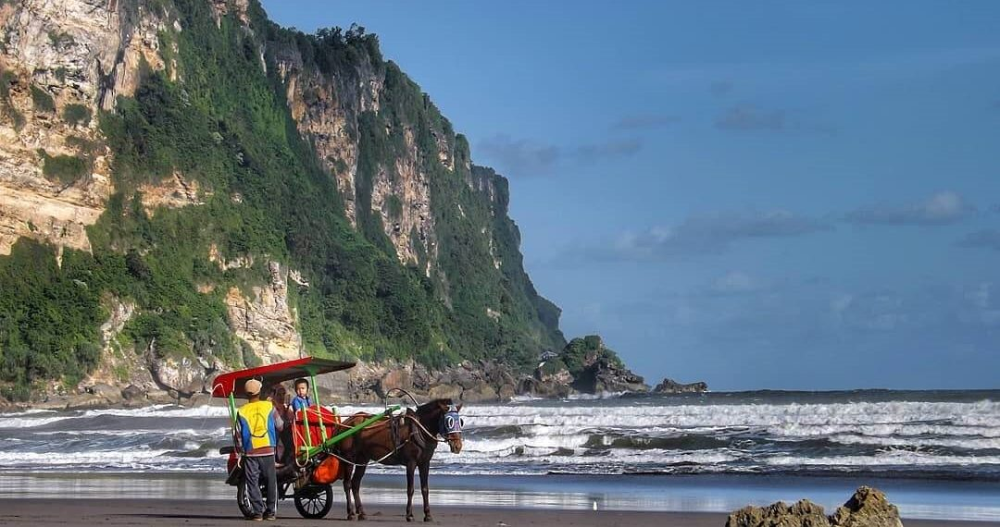
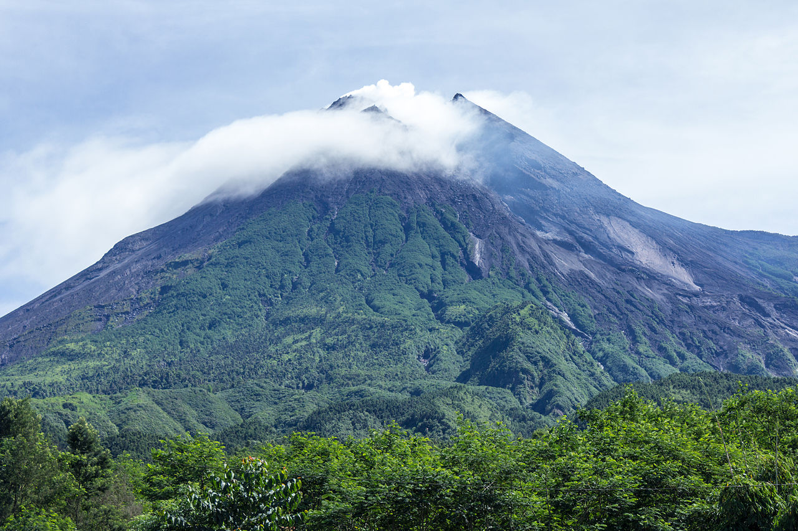
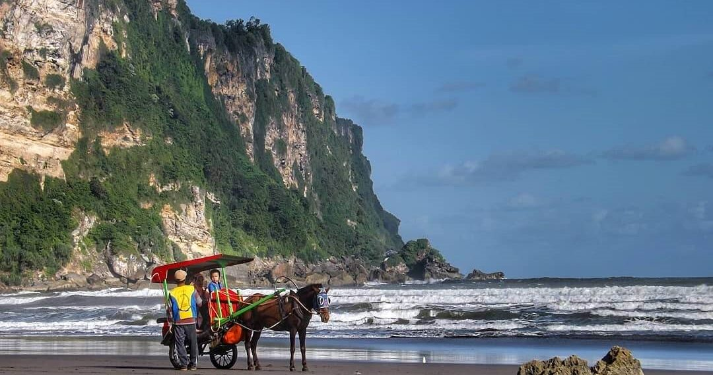

Daerah Istimewa Yogyakarta adalah salah satu provinsi yang ada di Indonesia.
Tentang Yogyakarta
Tugu Kota Yogyakarta
Daerah Istimewa Yogyakarta berdiri pada 7 Oktober 1756. Yogyakarta memiliki 5 provinsi, yaitu; Sleman, Kulon Progo, Bantul, Gunung Kidul, dan Pusat kota. Dahulu Kota Yogyakarta bukan merupakan bagian dari NKRI dan memiliki pemerintahan sendiri yang saat itu merupakan kerajaan yang bernama Keraton Ngayogyakarta. Lalu dengan diturunkannya maklumat pada 5 September 1945 yang disusun oleh Sri Sultan HB IX dan Sri Pakualaman, menyatakan bahwa Yogyakarta bergabung dengan NKRI.
Yogyakarta pernah dikenal dengan slogannya yang berbunyi "Jogja The Neverending Asia" berkat daya tariknya yang luar biasa. Sekarang, kota ini juga dikenal sebagai "Jogja Istimewa" karena nilai-nilainya yang dianut begitu elok.
Yogyakarta merupakan kota istimewa yang memiliki banyak destinasi wisata di sekitaran provinsi tersebut. Seperti Keraton yang merupakan tempat tinggal Kesultanan Yogyakarta, Gunung Merapi, berbagai macam wisata air, wisata sejarah, kebun binatang, maupun wisata hiburan modern pun ada juga di Yogyakarta. Semua pariwisata yang tersebar di seluruh bagian wilayah provinsi tersebut itu dikelola sendiri oleh warga sekitar wisata tersebut. Bahkan setiap tahunnya pasti ditemukan tempat wisata baru di berbagai daerah tertentu.
Makanan Khas
Gudeg
Gudeg merupakan sajian yang terbuat dari nangka muda yang dimasak dengan menggunakan santan. Gudeg terkenal memiliki citarasa yang manis dan umumnya berwarna cokelat yang berasal dari daun jati yang dimasak bersama dengan nangka muda. Selain nangka muda, gudeg penyajiannya menjadi lebih spesial dengan ditambahkan bahan pelengkap yang lainnya. Bahan pelengkap yang biasanya ditambahkan yaitu ayam, telur, kerecek atau lain sebagainya.
Bakpia
Bakpia merupakan oleh-oleh terkenal Khas Yogyakarta. Bakpia dikenal sebagai kue pie yang berisi kacang hijau. Dalam perkembangan zaman, isi bakpia lebih bervariasi mengikuti selera pasar, seperti keju, coklat, hingga durian.

 


